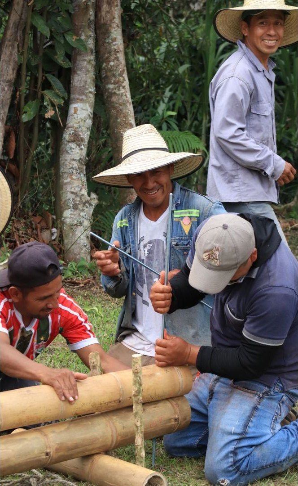
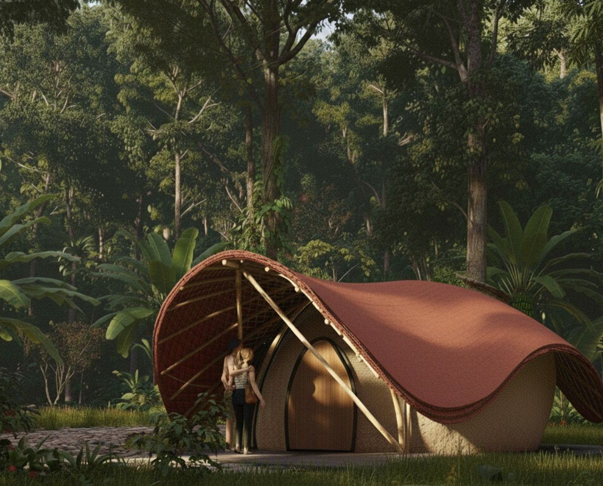

Terra + Bamboo
La mejor arquitectura
no domina el paisaje.
Forma parte de él.
Estudio de arquitectura y construcción en bambú y tierra · Colombia
Cuéntanos tu proyectoTaller en el guadual · vista de dron
Quiénes somos
Arquitectura que nace de la tierra y evoluciona con la tecnología.
 Santiago MontoyaArquitecto
Santiago MontoyaArquitecto José Luis ChalcoArquitecto
José Luis ChalcoArquitecto
Teboo (Terra Bamboo) es un estudio de arquitectura y construcción que nace de la conexión profunda con la naturaleza y del deseo de construir de manera más consciente y responsable.
Trabajamos con materiales vivos —guadua, tierra y recursos locales— que elegimos por su comportamiento estructural y su belleza. Antes de construir lo probamos todo: modelos 3D, diseño paramétrico y maquetas. Y siempre que podemos, construimos con la comunidad, porque compartir lo que sabemos también es construir.
Cada proyecto debe integrarse con su entorno, respetar los ecosistemas y reflejar la identidad de quienes lo habitan. No buscamos imponer una forma, sino encontrar la más inteligente para cada lugar.

Servicios
Lo que hacemos

01Diseño arquitectónico
Viviendas, eco-hoteles, glampings y espacios comunitarios pensados para su clima y su paisaje. En los proyectos turísticos planeamos desde el territorio hasta el último detalle.
Por ejemplo:
 02
02Construcción con materiales naturales
Ejecutamos obras en guadua, tierra (adobe, bahareque, tapia, entre otros) y técnicas mixtas, con altos estándares técnicos.
Por ejemplo:
 03
03Consultoría y diseño estructural
Acompañamos todas las fases del proyecto, del diseño a la obra: diseño estructural en guadua, diseño paramétrico y visualización 3D.
Por ejemplo:
 04
04Formación y talleres
Talleres prácticos de construcción sostenible, con énfasis en bambú y tierra, en obra y con comunidades.
Por ejemplo:
Del boceto a la obra
Cada forma empieza observando algo. Para la Cabaña Cocuyo, en San Carlos (Antioquia), partimos de un insecto luminoso de la región: sus dos manchas de luz se convirtieron en dos claraboyas en la cubierta.

Portafolio
Nuestros proyectos en Colombia
Acércate al mapa y haz clic en un punto para ver cada proyecto.
Ver la lista de proyectos
Momentos de obra
Arrastra para recorrer, haz clic para ampliar.

Formaciones
Compartimos conocimiento para transformar la forma de construir.
A través de workshops, investigaciones y recursos técnicos buscamos impulsar una nueva generación de arquitectos y constructores especializados en bioarquitectura.
- Talleres de bioconstrucción con guadua, en obra y con comunidades.
- Taller de maquetas de precisión.
Contacto
Construyamos algo que deje una huella positiva.
Cuéntanos tu idea. Estaremos encantados de ayudarte a convertirla en un proyecto sostenible, funcional y duradero.
Iniciar conversación ahora- WhatsApp +57 320 481 5569
- Correo teboo.arch@gmail.com
- Instagram @teboo_arch